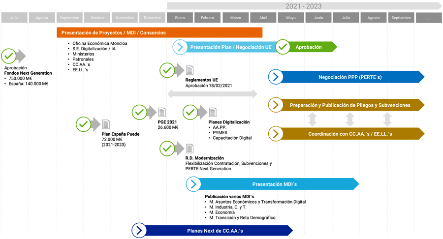

NEXT Ibermática
Fondos Next Generation EU
El pasado 7 de octubre, el Gobierno de España presentó el Plan de Recuperación, Transformación y Resiliencia (PRTR), que orienta la modernización de la economía española, la recuperación del crecimiento económico y la creación de empleo, la reconstrucción sólida, inclusiva y resiliente tras la crisis de la COVID-19, dando respuesta a los retos de la próxima década.El Fondo de Recuperación Next Generation EU permitirá movilizar un volumen de inversión sin precedentes: el acuerdo del Consejo Europeo prevé financiación por hasta 140.000 millones de euros en transferencias y créditos en los próximos seis años, un 11% del PIB de 2019.
Esto abre una oportunidad extraordinaria que permitirá no sólo la superación de la crisis y la recuperación del empleo, también la modernización de nuestra economía, para que esa recuperación sea verde, digital, inclusiva y social.
Como respuesta a este gran reto lanzamos NEXT Ibermática, que desde septiembre de 2020 ayuda a nuestros clientes en el conocimiento, acceso y aprovechamiento de esta nueva línea de financiación. Esta unidad, compuesta por un equipo experto en la identificación, diseño e implantación de proyectos de Transformación Digital, apoyará al resto de la compañía y a nuestros clientes en todos los sectores de nuestra actividad, permitiendo el aprovechamiento y mejor uso de esta oportunidad de apoyo económico para la recuperación e impulso de la actividad.

Líneas estratégicas
Desde NEXT Ibermática hemos identificados diferentes líneas estratégicas de apoyo a nuestros clientes:- Acompañamiento en la identificación y presentación de proyectos susceptibles de financiación a través de Next Generation EU.
- Participación en consorcios globales, territoriales o locales para la instrumentalización de iniciativas estratégicas alineadas con el Plan España Puede.
- Aprovechamiento de nuestra red y capilaridad en todo el territorio y en todos los sectores, apoyando la coordinación de entidades públicas y privadas, a todos los niveles y en todos los sectores.
- Puesta en valor de nuestra experiencia y conocimiento sectorial en los grandes proyectos de transformación digital de la administración pública, principalmente en sectores tan esenciales como la sanidad, los servicios sociales, la educación, el empleo o la justicia.
- Apoyo especializado a nuestros clientes del sector industrial, tanto PYME´s como grandes empresas, en el mejor uso y aprovechamiento de las diferentes líneas de apoyo y financiación de la digitalización de su actividad, a partir de nuestra experiencia y portfolio de servicios y soluciones digitales contrastadas.
Apoyo NEXT Ibermática
¿Cómo te apoyamos desde NEXT Ibermática?- Asesoramiento y seguimiento continuo y cercano de todas las posibilidades de presentación de proyectos y financiación a todos los niveles (AGE, CC.AA., patronales sectoriales, foros especializados, etc.).
- Apertura de nuevos canales y niveles de interlocución en clientes y agentes institucionales y sectoriales (CEOE, AMETIC, etc.).
- Generación de alianzas y consorcios locales y sectoriales.
- Identificación y diseños de proyectos susceptibles de ser financiados.
Luis Buñuel, 6, Mérida | Teléfono: 902 413 500 | Email: info@ibermatica.com